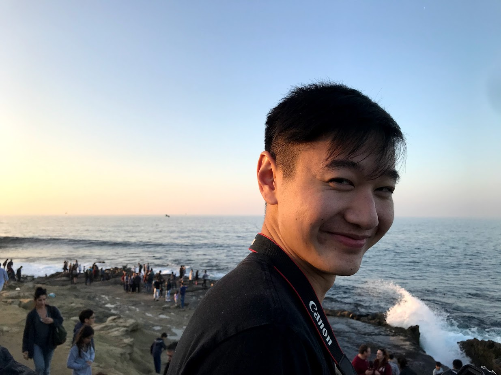
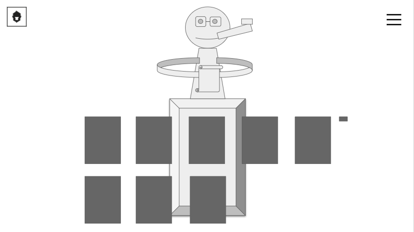
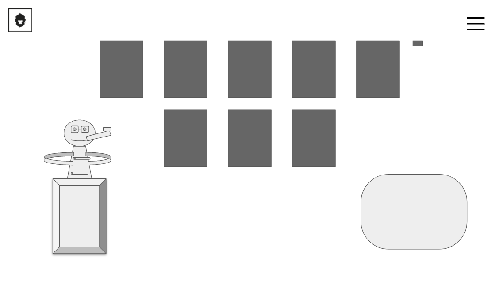

Michael Lum
Computer Science Major | 2nd Year
Greetings! I am a second year CS major and music minor at UC Berkeley. In my free time, I like to fiddle around on different instruments, milly rock, hang out with my fellowship, and waste away watching Planet Earth. I like cooking chicken and broccoli in various different fashions.

4 parent child hierarchies.
Design Questions
- 
- The goal of the website is to showcase the designs of a one man design agency. His desire is to attract people through presenting past works of art that he's done. This is intended for people interested in design as well as possible clients who would want a design done. This website accomplishes this through a simple layout that draws the eye to the designs itself, not wasting any excess.
- One problem I addressed was the alignment of the letters, which were a little distracting as they weren't centered. Another problem that I addressed was the size of the monkey, and how it drew the eye away from the main title of the page.
- 